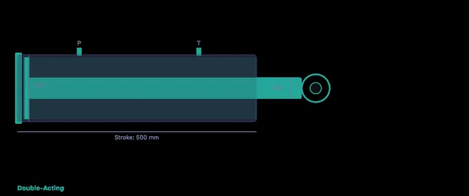
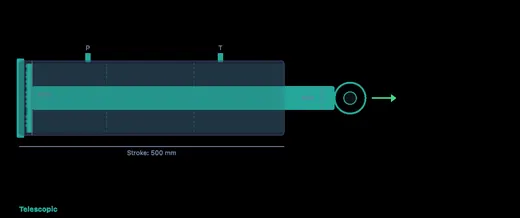

Hydraulic Cylinder Simulator
3D Model — Hydraulic Cylinder Simulator
Free hydraulic cylinder calculator — size bore, rod, and stroke, compute extend/retract force and speed, check rod buckling, and animate oil flow. Try it free!
F = P × A • Bore & Rod Sizing • Extend / Retract • Rod Buckling — Simulate • Explore • Practice • Quiz
Display Controls
1 Overview
The Hydraulic Cylinder Simulator lets you size and analyse hydraulic cylinders by calculating extend and retract force, piston speed, volume per stroke, pump power, and rod buckling safety factor. It covers three cylinder types: double-acting, single-acting, and telescopic.
The fundamental equation F = P × A drives all calculations. For extend strokes, force acts on the full bore area. For retract strokes, force acts on the annular area (bore minus rod diameter). This difference means retract force is always less than extend force, but retract speed is faster for the same flow rate. The tool also checks cushioning requirements and evaluates seal type considerations.
2 Entering the Inputs
- Select a Cylinder Type (Double-Acting, Single-Acting, or Telescopic).
- Adjust Bore D, Rod d, Stroke L, Pressure, Flow Rate, and Efficiency sliders.
- Click Animate to see the cylinder extend and retract with animated oil flow.
- Toggle Show Oil Flow and Show Dimensions for visual details.
- Readout cards update in real time with force, speed, volume, power, and buckling safety factor.
3 Reading the Result
The canvas renders a detailed hydraulic cylinder cross-section with piston, rod, bore, seals, and port connections. Animated oil flow shows pressurised fluid entering and exiting. Dimensions overlay shows bore, rod, and stroke measurements.
Key formulas: Extend Force = P × (π/4 × D²), Retract Force = P × (π/4 × (D² - d²)), Speed = Q/A, Power = P × Q / (60 × η). The buckling safety factor uses Euler's formula: Pcr = π²EI/L², with SF = Pcr / actual force. Values below 3.5 are flagged as unsafe.
4 The Formulas Behind It
Study concepts across Fundamentals, Cylinder Types, Sizing, and System Design. Topics include Pascal's law, bore area vs annular area, rod/bore ratio selection, cushioning, seal types, mounting styles, and hydraulic circuit integration.
5 Try a Problem
Practice generates problems on extend/retract force, speed, flow rate, power, volume, and buckling calculations. Quiz provides 5 randomised questions from a pool of 15.
6 Engineering Notes
- Retract speed is always faster than extend speed for the same flow rate because the annular area is smaller than the bore area.
- Rod buckling is critical for long-stroke cylinders — always check the safety factor, especially when the cylinder pushes (not pulls) a load.
- A common rod-to-bore ratio is 0.5 (rod diameter = half the bore) for standard applications.
- Pump power = pressure × flow rate / (60 × efficiency) — remember to account for efficiency losses.
- Telescopic cylinders achieve long strokes from compact retracted lengths but have lower force due to smaller inner stages.
- Use the animation to visualise the speed difference between extend and retract strokes.
How to Size a Hydraulic Cylinder — Forces, Speed & Buckling

Hydraulic cylinders convert fluid pressure into linear mechanical force and motion. They are the workhorses of mobile equipment, manufacturing presses, agricultural machines, and construction vehicles. Correctly sizing a hydraulic cylinder requires calculating the bore area, selecting an appropriate rod diameter, verifying extend and retract forces, and checking the rod against Euler buckling. This free simulator lets you adjust every parameter and visualise results in real time.
The fundamental equation is F = P × A, where F is force (N), P is system pressure (Pa), and A is piston area (m²). For the extend stroke, force acts on the full bore area: Abore = π/4 × D². For the retract stroke, force acts on the annular area: Aann = π/4 × (D² − d²). Because the annular area is smaller, the retract force is always less than the extend force, but the retract speed is faster for the same flow rate.
A trick I show students on day one of the hydraulics module: the retract area is the bore area minus the rod area, so retract force and extend force are never equal. The ratio matters — a 2:1 cylinder retracts at twice the speed of its extend, with half the force, on the same pump. Skipping that asymmetry is the single most common sizing mistake in homework I mark.
Cylinder Types and Applications
Double-acting cylinders use pressurised oil on both sides of the piston, allowing powered extension and retraction. They are the most common industrial type. Single-acting cylinders have oil on one side only; a spring or external load returns the piston. They are simpler and cheaper but provide force in one direction only. Telescopic cylinders use nested stages to achieve a very long stroke from a compact retracted length, commonly seen in dump trucks and mobile cranes.

Rod Buckling — Euler Critical Load
When a hydraulic cylinder pushes a load, the rod is under compression. If the rod is long relative to its diameter, it can buckle before reaching its material yield strength. The Euler critical load is Pcr = π²EI / L², where E is the modulus of elasticity (210 GPa for steel), I is the second moment of area of the rod cross-section, and L is the free (unsupported) length. Engineers typically require a safety factor of 3.5 or more against buckling. This simulator calculates the buckling safety factor automatically as you change bore, rod, and stroke parameters.
Pump Power and Flow Rate
The hydraulic power required to drive a cylinder is Phyd = p × Q / (60 × η), where p is pressure (MPa), Q is flow rate (L/min), and η is overall efficiency (typically 0.80–0.90). Piston speed equals flow rate divided by the effective area: v = Q / A. Higher flow rates increase speed but demand a larger pump and more power.
Who Uses This Simulator?
This hydraulic cylinder simulator is designed for mechanical engineering students, hydraulic system designers, maintenance technicians, mobile-equipment engineers, and vocational education instructors. It provides hands-on exploration of cylinder sizing, force calculations, speed analysis, and buckling checks without requiring physical hardware or proprietary software.
Explore Related Simulators
If you found this hydraulic cylinder simulator helpful, explore our Pascal’s Law Simulator, Fluid Flow Simulator, Pressure Vessel Simulator, and Simple Machines Simulator for more hands-on practice.